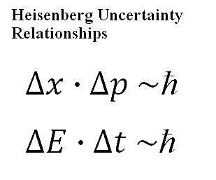

[04/12/23] Hawking's radiation is not constant.
Hello there readers, won't you be surprised to know that black holes have to become bias for maintaining it's conservation of energy. Believe me it's more exciting then it sounds. This article is suitable for both science and non-science readers. You can skip the derivation or the formulas if you want as those are just for the people who really want to know what is the reason behind it.

What are "Hawking's Radiations" ?
Hawking radiation is the electromagnetic radiation given out by the just outer layer of the event horizon. Everything in this universe that has a temperature must emit electromagnetic radiation now as because black hole has a finite temperature, it must also radiate thermal radiation known as black body radiation.
The idea behind Hawking radiation is rooted in the principles of quantum mechanics and the concept of virtual particles. According to quantum mechanics, particles and antiparticles can spontaneously appear and annihilate each other near the event horizon of a black hole. The event horizon is the boundary around a black hole beyond which nothing can escape its gravitational pull.

In the context of Hawking radiation, one of these particles (let's say a particle) falls into the black hole, while the other (antiparticle) escapes into space. Because the particles are created near the event horizon, the one that falls in can never re-emerge, and the one that escapes effectively becomes real and can be detected as radiation
Hawking's theory implies that black holes are not completely black but emit faint radiation, causing them to lose mass and eventually evaporate over time. This process has profound implications for our understanding of the nature of black holes and the fate of information that falls into them. However, as of my last knowledge update in January 2022, experimental confirmation of Hawking radiation had not been achieved, and it remains one of the outstanding challenges in theoretical physics.
Conservation of energy
The creation of these particles requires energy, and since they are created from the vacuum, it might seem like energy is being created out of nothing. However, this apparent violation of energy conservation is allowed by the Heisenberg uncertainty principle, a fundamental concept in quantum mechanics. The uncertainty principle allows for temporary violations of energy conservation as long as the energy is "borrowed" for a short period, and the borrowed energy is later returned.
The conservation of energy is maintained when considering the entire system, including the black hole and the escaping particle. The energy borrowed from the vacuum near the black hole is returned when one of the particles falls in, and the net effect is a decrease in the black hole's mass. This delicate interplay between quantum mechanics, gravity, and the conservation of energy is a fascinating aspect of Hawking's work and our understanding of the behavior of black holes.